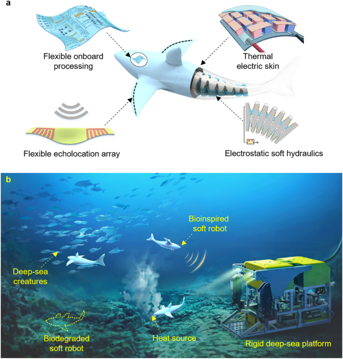

This paper is a paper that is a work in progress. Hope whoever is reading this is having an amazing day. The rest of this text is just waffle to ensure the placeholder paragraph takes up a larger number of lines.
An abstract is a brief summary of a text Max (150 words). A mini version of the paper and must be completely seperate to the rest of the paper. Include a background - why am i writing this?, Purpose of study,
method, conclusion.
Introduction
The world's oceans present a vast and resource rich environment, this as well as the huge area of ocean that remains unexplored, 95% (NOAA, 2024), creates an alluring field where both technology and knowledge can be
developed. This, however, due to the extreme pressures produced by the different depths of the oceans, has required the development of technology such as unmanned vessels and pressure resistant hulls ( Weicheng, c. et al. (2023)). These developments, however, were also accompanied by a range of limitations such as increased weight and reduced adaptability, this led to the further development of technology to produce soft bodied
mechanisms. Contrary to previous technology these soft robots enable delicate interactions with different specimens and provide a superior level of adaptability, (Li, Guorui. Et al. (2023)).
History
Originally deep-sea exploration was conducted by submersibles, these vehicles were designed to be manned by a small number of passengers and often had to be connected to a ship via a fiber optic cable which transferred
the array of data that was collected. This technology, whilst effective during the emergence of deep-sea exploration, soon became ineffective with the invention of ROVS (Remotely operated Vehicles). ROVS removed the time
limitations created by the human passengers and decreased the risk of human harm, allowing vehicles to reach deeper and more remote areas. (Marranzino, 2017). However, due to the use of the fiber optic umbilical cord
that attached to these types of machines transmitting data to a ship, maneuverability and adaptability was reduced. This led to the development of Autonomous Underwater Vehicles (AUVS) which are highly maneuverable,
self-propelled and must be mapped to a specific path using code. AUVS are also used cooperatively with other vehicles to create a large system for exploration that is more cost effective and efficient. ( Weicheng, c. et al. (2023)).
To ensure these vehicles can survive the extreme pressures of the ocean the material had to also be developed, creating a material that is strong and durable whilst also ensuring the vehicle is light weight was a necessity
in the production of these vehicles as it ensures they are maneuverable and can effectively function when acted upon by higher pressures. The use of light composite materials combined with a type of high strength metal
such as steel or aluminum is currently a popular solution for creating a pressure resistant hull. Materials such as stainless steel and Aluminum are used over an array of other materials due to their strength but also
because the corrosion rate of these materials decreases with the depth. This reaction occurs due to the decrease in both temperature level and oxygen. (chen, s. et, al. (2021)) This, however, also had
its faults as composite materials vary in quality during construction and are also very expensive to produce. The use of pressure resistant hulls as well as being expensive, greatly reduces maneuverability and hence
adaptability of underwater vehicles. This is due to the hulls large size and weight. ( Weicheng, c. et al. (2023))
Soft Bodied Development
Soft Bodied Development paragraph

Figure 1 – Examples of the type of mechanisms affected by the development of soft technology (Bioinspired soft robots for deep-sea exploration, 2023)